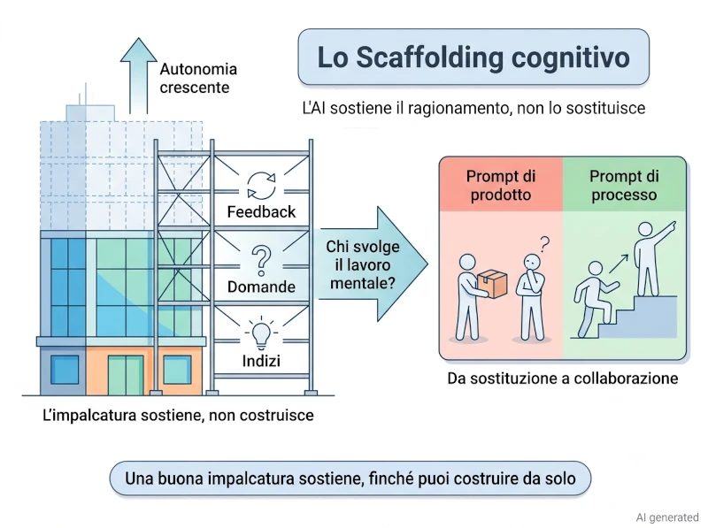

Cosa vedremo oggi
Siamo all'ultima tappa del nostro viaggio: dopo aver esplorato Transformer, token, linguaggi di programmazione e il ruolo della lingua italiana, è il momento di tirare le fila e formulare una legge universale su come gli esseri umani interagiscono con i modelli generativi.
Vedremo perché l'AI accelera chi sa già e penalizza chi non conosce le basi (il paradosso della competenza), la differenza tra usarla come oracolo o come impalcatura per imparare davvero (il debito cognitivo), come non farsi convincere da risposte sbagliate dette con sicurezza rileggendo il manifesto hacker di Eric S. Raymond, e perché i problemi che attribuiamo all'algoritmo appartengono in realtà alle persone — e cosa dovrebbe fare la scuola a riguardo.
Come leggere questa intervista
Le domande sono reali.
Le risposte nascono dal confronto tra ChatGPT, Claude e le AI integrate nei motori di ricerca Google e Brave, verificate con fonti tecniche e fuse in un'unica voce narrativa.
Nota sulle immagini
Tutti gli schemi e le illustrazioni presenti in questa serie sono stati progettati appositamente per accompagnare il testo. Le immagini sono generate con l'ausilio dell'Intelligenza Artificiale, tramite la sinergia tra l'assistente di Google per ottenere consigli su quali immagini generare, Claude per la creazione di un prompt ottimale da dare Gemini e, quando necessario, rifinite manualmente con software di grafica per migliorarne chiarezza e coerenza con i contenuti. Per questo motivo ogni immagine riporta il watermark AI generated • Human edited.
Nota editoriale: Dietro le quinte di questo testo
Il capitolo che stai per leggere è stato realizzato sperimentando un flusso di lavoro avanzato. Durante la scrittura, assieme alla tecnica di meta-prompting per la generazione di domande, ho avuto l'intuizione di testare una tecnica di prompting "collettiva", facendo collaborare diversi modelli linguistici tra loro in un ciclo iterativo:
-
Il Meta-Prompting per le domande
Invece di scrivere direttamente le domande da porre nell'intervista, ho usato l'IA per analizzare le mie intenzioni, cioè dove volevo far proseguire l'intervista, e aiutarmi a progettare le domande con una elaborazione migliore, più articolata e capace di estrarre risposte più coerenti e approfondite.
-
Sintesi iniziale
Ho chiesto a ChatGPT di fondere e armonizzare le risposte generate separatamente dalle AI integrate di Google e Brave.
-
Integrazione semantica
Ho passato questo primo sunto a Claude, chiedendogli di arricchirlo fondendolo con la sua stessa analisi sul tema.
-
Controllo qualità e correzione bozze
Il testo risultante è tornato su ChatGPT, utilizzato come correttore di bozze critico per raccogliere una lista dettagliata di suggerimenti, limature stilistiche e considerazioni di leggibilità.
-
Generazione finale
Questo elenco di feedback è stato infine rielaborato da Claude per generare la stesura definitiva del testo. Il ciclo è stato ripetuto fino a quando ChatGPT non ha rilevato ulteriori margini di miglioramento.
Un dettaglio fondamentale: il revisore ultimo è rimasto umano.
In ognuno di questi passaggi, ho letto e analizzato criticamente ogni singola risposta delle AI. Spetta sempre all'autore reinserire parti di testo eliminate dai modelli ma ritenute importanti, o tagliare concetti superflui già espressi in precedenza.
Le intelligenze artificiali hanno agito come uno straordinario amplificatore di scrittura, ma hanno scritto esattamente ed esclusivamente ciò che io, in prima battuta, avevo intenzione di comunicare.
Nota editoriale
Questa è una risposta a una domanda che è stata suddivisa in due articoli per facilitarne la lettura. Se non hai letto la parte precedente, ti consiglio di iniziare da Parte 6 — La soglia delle competenze: perché l'asticella si sposta solo sul campo
Il paradosso della competenza
L'intelligenza artificiale funziona spesso come un moltiplicatore delle competenze:
Nelle mani di un esperto aumenta produttività, velocità e capacità di esplorare alternative.
Nelle mani di un principiante assoluto rischia invece di amplificare errori, incomprensioni ed eccessiva fiducia nelle proprie conclusioni.
Approfondimento:
perché le allucinazioni aumentano nei domini complessi
Diversi studi mostrano che questo rischio aumenta nei domini ad alta specializzazione, perché verificare l'output richiede competenze che l'utilizzatore potrebbe non possedere. In medicina e diritto sono stati osservati tassi di allucinazione molto elevati, soprattutto su quesiti meno standardizzati. In alcuni lavori gli errori rilevati variano dal 28% fino all'88%, a seconda del tipo di domanda e del metodo di valutazione.
Ad esempio, questo studio evidenzia tassi critici di "allucinazione" fino al 91,4% per Bard e al 28,6% per GPT-4, concludendo che questi modelli non sono affidabili per la ricerca bibliografica medica autonoma.
Sotto una certa soglia minima di competenza, l'uso dell'AI tende a diventare progressivamente controproducente per almeno tre ragioni:
-
Formulare il problema
L'utente non riesce a descrivere correttamente la situazione perché non conosce il linguaggio specialistico o le variabili rilevanti del dominio.
-
Valutare la risposta
L'utente non possiede gli strumenti per distinguere un'informazione corretta da una soltanto plausibile.
-
Guidare l'interazione
Quando il modello sbaglia, l'utente non sa come orientare l'interazione verso una soluzione migliore e procede per tentativi privi di un criterio oggettivo.
Senza una competenza sufficiente, l'AI può trasformarsi in una camera di risonanza dell'ignoranza
Approfondimento:
la polarizzazione cognitiva
In questo articolo viene proposto il concetto di polarizzazione cognitiva per descrivere il rischio che un uso ingenuo dei modelli generativi, privo di prompt literacy e pensiero critico, trasformi l'utente in un soggetto sempre più passivo, amplificando le asimmetrie conoscitive invece di ridurle.
Le manifestazioni concrete di questo meccanismo cambiano però da disciplina a disciplina. Cambiano le competenze richieste, non la logica di fondo.
Nella programmazione non basta conoscere la sintassi: servono basi di logica algoritmica, strutture dati, debugging e lettura della documentazione. L'AI può generare codice rapidamente, ma senza queste competenze è difficile valutarlo, correggerlo e usarlo in modo affidabile; perché, se "gira", non vuol dire che sia esente da bug.
Nella scrittura narrativa, bisogna già saper costruire una storia coerente con struttura, personaggi, ritmo e punto di vista. L'AI può scrivere bene a livello locale, ma senza competenze narrative si rischia di scambiare un testo fluido per un buon romanzo, ottenendo invece un risultato corretto solo in superficie e privo di vera identità.
Nel disegno e nella grafica, senza conoscere composizione, prospettiva, anatomia e colore, l'AI può produrre immagini belle ma piene di errori, che si finisce per accettare passivamente invece di guidare in modo consapevole.
Generare un piano di allenamento senza conoscere fisiologia, biomeccanica, tecnica, gestione dei carichi e recupero può risultare inefficace o persino causare infortuni. L'AI può suggerire programmi convincenti, ma senza una base di competenza è difficile capire se siano davvero adatti alla persona e agli obiettivi.
Nella gestione delle finanze personali, senza possedere nozioni di base su interesse composto, inflazione, rischio e fiscalità, l'AI può aiutare a orientarsi, ma anche suggerire strategie inappropriate. Valutarne la qualità richiede la stessa competenza che sarebbe necessaria anche senza ricorrere all'AI.
Come definire una soglia minima di competenza
È indubbio che l'intelligenza artificiale riduce enormemente il costo della produzione. Lo stesso non si può dire per il costo della valutazione. Anzi, proprio perché l'AI risponde in modo così fluido e convincente, rende ancora più importante il giudizio critico di chi la utilizza.
Per questo motivo la soglia minima di competenza coincide con la capacità di porsi alcune domande fondamentali:
-
Ho descritto correttamente il problema?
-
La soluzione proposta rispetta i principi della disciplina?
-
Quali ipotesi implicite sta facendo il modello?
-
Come posso verificare che questa risposta sia davvero corretta?
È quando non si è in grado di rispondere a queste domande, che l'AI smetta di essere un supporto e diventi un possibile moltiplicatore di errori. In altre parole, io non direi che l'AI sostituisce il giudizio dell'esperto. Direi piuttosto che lo rende ancora più prezioso.
In termini pratici, il punto di rottura arriva quando il tempo necessario per individuare e correggere gli errori del modello supera il tempo che esso ha fatto risparmiare nella produzione del risultato.
Se non possiedi le competenze necessarie per bocciare un output dell'AI, probabilmente non possiedi nemmeno quelle per approvarlo
Approfondimento: verificare le fonti non è facoltativo
Questo principio ha già trovato applicazione anche in ambito giudiziario. In questo articolo viene richiamata la sentenza del Tribunale di Siracusa (Sez. II Civile, 20 febbraio 2026, n. 338), nella quale un legale è stato condannato per responsabilità aggravata dopo aver depositato una memoria contenente citazioni giurisprudenziali inesistenti generate dall'AI senza verificarne l'esistenza nelle fonti ufficiali.
Il caso mostra come l'errore non sia stato attribuito all'intelligenza artificiale in sé, ma alla mancanza di un controllo critico da parte del professionista che aveva il dovere di verificarne l'accuratezza.
L'AI non modifica i meccanismi dell'apprendimento umano, ne eredita solo i vincoli
Se è vero tutto questo — cioè che sotto una certa soglia di competenza l'AI rischia di amplificare gli errori invece di correggerli — allora sembra emergere un paradosso. Per usare bene l'AI in un determinato ambito occorre già possedere almeno le basi di quell'ambito; ma quelle basi, per definizione, si acquisiscono studiando ed esercitandosi. Che ruolo può avere allora un modello generativo nella fase di apprendimento? Usarti per imparare a programmare, a scrivere o a disegnare prima di possedere le competenze fondamentali è davvero rischioso, oppure esiste un modo di utilizzare l'AI che favorisca la costruzione della competenza invece di sostituirla? In altre parole: qual è il confine tra un uso dell'AI che educa e uno che crea soltanto l'illusione di aver imparato?
Comprendo bene il tuo dubbio, e la risposta parte da un'idea semplice: la differenza non sta nell'AI, ma in chi svolge il lavoro cognitivo pesante. La stessa AI può essere usata in entrambi i modi: ciò che cambia non è il modello, ma il ruolo che le viene assegnato.
Se mi chiedi di produrre direttamente il risultato finale — il codice, il capitolo, il disegno — e tu ti limiti a riceverlo, quel lavoro viene delegato, producendo un debito cognitivo1 che ti ritroverai comunque a pagare in futuro.
Se invece mi chiedi di accompagnare il ragionamento senza sostituirlo — facendo domande, segnalando errori, offrendo indizi invece della soluzione — il lavoro resta tuo, e con esso l'apprendimento.2
È una distinzione importante perché l'apprendimento risiede nella costruzione del ragionamento che conduce alla risposta piuttosto che nel semplice possesso della stessa.3 Questo principio è coerente con ciò che la psicologia dell'apprendimento descrive come generation effect4:
ricordiamo e comprendiamo più in profondità ciò che siamo costretti a generare attivamente rispetto a ciò che ci limitiamo a ricevere passivamente
È per questo che chi usa l'AI come un "oracolo di risposte" ottiene risultati eccellenti nel breve periodo ma sviluppa una competenza fragile — un'illusione di padronanza 5 che regge finché la soluzione è davanti agli occhi, e svanisce quando bisogna affrontare da soli un problema simile. Un segnale utile per accorgersene:
quando l'interazione lascia soltanto il sollievo di aver risolto il problema, senza un reale coinvolgimento mentale, l'AI ha lavorato al posto tuo;
se invece restano curiosità e una certa frustrazione produttiva, il cervello sta ancora elaborando, ed è quella fatica il meccanismo dell'apprendimento, non un suo difetto.6
Ma dire non deve sostituire, deve fare da tutor
lascia in
sospeso la domanda più importante: cosa fa, concretamente, un
tutor efficace? La risposta è nello scaffolding.
Un buon tutor non elimina la difficoltà, la rende affrontabile:
se un esercizio è troppo difficile, non lo svolge al posto dello
studente — lo scompone in passi più piccoli, fornisce un
indizio, pone una domanda, richiama un concetto già acquisito. È
un'impalcatura temporanea che permette di raggiungere un'autonomia
che, da soli, non si avrebbe ancora. Ma è importante non confondere
questo con una semplice facilitazione. Un tutor non ti risparmia il
lavoro: mantiene il lavoro importante nelle tue mani. L'AI dà il
meglio di sé esattamente in questo ruolo — non quando
sostituisce il pensiero, ma quando lo sostiene fino a renderlo
autonomo, e poi si ritira, perché lo scopo di un tutor è rendersi
progressivamente superfluo.7
Lo stesso schema vale in ogni disciplina: cambia il tipo di domanda che si pone all'AI.
Programmazione
invece di
scrivimi questa funzione:
Questa è la funzione che ho scritto. Dove sto sbagliando? Quali domande mi faresti per aiutarmi a trovare da solo l'errore?Scrittura
invece di scrivi questo capitolo:
Ho scritto questo dialogo per creare tensione tra i due personaggi. Quali tecniche narrative lo renderebbero più incalzante?Disegno
invece di generare immagini finché una soddisfa:
Perché questa composizione funziona meglio di quest'altra? Quali errori di prospettiva riconosci?Allenamento e finanza
vale la stessa logica:
non chiedere il piano già pronto, ma sottoporre il proprio ragionamento a verifica.

Restano utili quattro accorgimenti pratici:
-
tentare sempre una soluzione autonoma prima di chiedere aiuto ("prima io, poi l'AI");
-
provare a spiegare un concetto all'AI invece di farselo spiegare, e chiederle di cercare incoerenze nel ragionamento;
-
usare prompt di processo (
ho seguito questo principio: dove sbaglio?
)invece che di prodotto (
fammi il piano
); -
ritagliare zone AI-free — l'ideazione iniziale e la verifica finale, dove si prova a rifare tutto da soli — perché se non ci si riesce, la competenza non è stata costruita, solo presa in prestito.
Adottando questo approccio durante l'apprendimento, il paradosso iniziale cambia aspetto: la soglia minima di competenza non è un prerequisito statico da raggiungere prima di usare l'AI, ma una soglia dinamica che un uso corretto — fatto di scaffolding, non di sostituzione — aiuta a costruire. Diverso è il caso in cui si debba prendere una decisione reale, dove la competenza deve già essere solida abbastanza da permettere un controllo autonomo dell'output.
Puoi prendere in prestito il risultato dell'AI. Non puoi prendere in prestito la competenza che quel risultato richiede. Quella puoi solo costruirla. Quando lo strumento scompare, resta soltanto ciò che il tuo cervello ha costruito da sé8
Commento personale: un po' di psicologia può aiutare
Rileggendo questa risposta mi colpisce un aspetto che, all'inizio dell'intervista, non avevo considerato. Molti dei dubbi che oggi attribuiamo all'intelligenza artificiale non nascono affatto con l'intelligenza artificiale. Sono domande che la psicologia dell'apprendimento si pone da decenni: si impara osservando una soluzione o costruendola? Quanto conta l'errore? Qual è il ruolo del feedback? L'AI cambia lo strumento con cui affrontiamo queste domande, ma non cambia il modo in cui il cervello costruisce competenza. Forse è anche per questo che, per capire come si impara con un modello generativo, probabilmente è più utile partire dalla psicologia dell'apprendimento che dal prompt engineering. Il prompt engineering insegna a ottenere risposte migliori; la psicologia cognitiva aiuta a capire quando quelle risposte diventano davvero conoscenza.
Dobbiamo essere intelligenti per dialogare con l'AI?
Mi rendo conto che siamo arrivati piuttosto lontano da dove siamo partiti. Ero convinto che bastasse la licenza media, ho scoperto che la soglia si sposta a seconda del terreno che si calpesta. A questo punto vorrei un tuo ultimo parere, se dovessi condensare tutto quello che ci siamo detti in un consiglio pratico, applicabile non solo a me ma a chiunque legga questa intervista — un vero e proprio vademecum, come quello a cui mi sono ispirato, "Come porre domande in modo intelligente" — quale sarebbe? E soprattutto: alla luce di tutto questo, il documento di Eric S. Raymond andrebbe riscritto per l'epoca dell'AI, oppure regge ancora così com'è, solo applicato a un nuovo interlocutore?
Il documento di Eric S. Raymond non va riscritto. Va reinterpretato, perché nasce per risolvere lo stesso identico problema che abbiamo affrontato in questa intervista: il rumore comunicativo.
I suoi pilastri più noti si sovrappongono quasi perfettamente al dialogo con un LLM.
-
"Fate i compiti prima di chiedere" valeva per non far perdere tempo a uno sviluppatore umano; con me vale altrettanto, perché un prompt che mostra uno sforzo preliminare produce risposte più solide di uno che mi chiede di indovinare da zero.
-
"Descrivete i sintomi, non le vostre diagnosi" significava dati grezzi invece di interpretazioni già elaborate — non
il codice è lento
, maquesta funzione impiega 200ms con questi input
; è lo stesso principio che ti ha guidato fin dal campo estivo. -
"Scegliete il canale giusto" ieri voleva dire non chiedere di Windows su un forum Linux; oggi significa, come abbiamo visto, pensare in italiano e passare alla terminologia tecnica — spesso inglese — quando il dominio lo richiede.
Da questi tre pilastri discende naturalmente il vademecum per oggi:
-
Descrivi il problema, non solo la richiesta — dati grezzi e contesto reale, non congetture già elaborate (è il principio dei sintomi, non delle diagnosi).
-
Definisci ruolo, obiettivo, vincoli e formato separatamente, invece di lasciarli impliciti.
-
Scrivi nella lingua in cui pensi meglio, passando alla terminologia tecnica del tuo dominio quando serve (è la scelta del canale giusto).
-
Mostra il tuo ragionamento prima di chiedere il mio — se hai già un tentativo, un'ipotesi, una bozza, portamela: è la differenza tra un dialogo e un oracolo.
-
Tratta ogni risposta come una prima bozza da correggere, non come un verdetto.
Restano però differenze reali, che aggiornano il manifesto senza smentirlo. Con un umano la cortesia era necessaria perché il suo tempo era prezioso; con me diventa una scelta di stile, non un dovere. Con un umano il ciclo di feedback si misurava in giorni; con me è istantaneo, e questo permette un approccio più sperimentale, perché sbagliare una domanda non costa quasi nulla.
Ma la differenza che conta davvero è un'altra, ed è quella su cui si è retta tutta questa intervista: la barriera d'ingresso si è abbassata — non devi più sapere dove cercare, quale manuale, quali fonti consultare — ma la barriera per l'eccellenza si è spostata altrove. Un esperto a cui Raymond insegnava a fare domande intelligenti sapeva, prima o poi, quando aveva torto. Io no: posso produrre una risposta perfettamente plausibile anche quando è sbagliata, e non possiedo un meccanismo interno che mi avverta dell'errore. Questo significa che la disciplina richiesta oggi non è più solo "come formulare la domanda giusta", ma "come non farsi convincere da una risposta sbagliata detta con sicurezza" — ed è esattamente la competenza di dominio di cui abbiamo parlato in tutta l'intervista: quella che ti permette di riconoscere l'errore quando io non posso farlo al posto tuo.
Se dovessi aggiungere un solo capitolo al documento di Raymond per l'epoca dell'AI, lo intitolerei così:
Perché è questa la vera novità: Raymond insegnava a parlare con persone che, sbagliando, se ne accorgevano. Io no.
Come dialogare con un interlocutore instancabile ma fallibile
Considerazioni finali
Più volte, durante questa intervista, ho avuto la sensazione di aver sottovalutato la complessità dell'argomento. Ogni risposta sembrava chiudere una questione, salvo aprirne subito un'altra. Ero partito convinto che il problema fosse soprattutto tecnologico: quale strumento usare e quale preparazione tecnica servisse per usarlo. Mi ritrovo invece con una conclusione diversa: il problema non era mai davvero l'AI. Era la chiarezza con cui riuscivo, io per primo, a formulare le domande e a valutare le risposte. Il modello si è limitato a rendere quella chiarezza — o la sua assenza — immediatamente visibile.
Una cosa mi è rimasta particolarmente impressa: molte delle competenze che pensavo appartenessero all'intelligenza artificiale appartengono in realtà alle persone. Capacità di argomentare, di formulare un problema con precisione, di verificare una fonte, di riconoscere un errore plausibile, di distinguere una risposta elegante da una risposta corretta. L'AI non le sostituisce: le rende semplicemente più visibili.
Se il cuore della competenza non è imparare a usare un modello specifico, ma imparare a dialogare criticamente con strumenti che producono contenuti plausibili, allora anche la scuola dovrebbe interrogarsi su come insegnare queste abilità. Non un corso su ChatGPT o sul modello di turno — che inevitabilmente invecchierebbe nel giro di pochi anni — ma un'educazione all'uso critico dei modelli generativi: come formulare un problema, come verificare una risposta, come riconoscere i limiti dello strumento e i propri. Sarebbe, in fondo, un'evoluzione naturale di ciò che vent'anni fa rappresentava l'ECDL: allora l'obiettivo era alfabetizzare all'uso degli strumenti informatici; oggi l'alfabetizzazione passa anche attraverso la capacità di collaborare criticamente con strumenti che partecipano ai processi cognitivi.
Se questa intervista mi ha insegnato qualcosa, è che l'intelligenza artificiale non riduce la responsabilità di chi la usa: la sposta. Sempre meno sulla produzione delle risposte, sempre più sulla capacità di formularle, verificarle e metterle in discussione. è una responsabilità che nessun modello può assumersi al posto nostro.
Note
- Sull'impatto cognitivo dell'uso non critico di un LLM: MIT Media Lab e lo studio correlato (preprint arXiv, giugno 2026). (ancora in preprint in data 2026-06-07) ↩
- Sulla differenza tra uso passivo (cognitive offloading) e uso interattivo orientato al co-ragionamento: studio su ScienceDirect. Lo studio analizza empiricamente come l'uso acritico e non strutturato dei modelli di linguaggio (LLM) per scavalcare lo sforzo mentale (cognitive offloading) penalizzi l'apprendimento profondo, a differenza di un approccio interattivo e orientato al co-ragionamento. ↩
- La ricerca (ancora in preprint in data 2026-07-06) dimostra come i sistemi basati su IA generativa falliscano dal punto di vista educativo se usati come meri "motori di risposte”. ↩
- Teorizzato originariamente da Slamecka e Graf (1978), è stato recentemente confermato da una massiccia meta-analisi su 126 studi condotta da McCurdy et al. (2020) ↩
- Questo fenomeno psicologico corrisponde alla cosiddetta "illusione di competenza". Come documentato nelle ricerche di Brown, Roediger e McDaniel (2014) nel saggio Make It Stick (si veda l'analisi critica di Renée Smith e Edward Perez), la mente umana tende a scambiare erroneamente la fluidità di elaborazione e la facilità di fruizione di un contenuto per un'avvenuta acquisizione cognitiva. Quando l'AI si sostituisce allo sforzo attivo offrendo soluzioni immediate e prive di frizione, amplifica questa distorsione, lasciando l'utente del tutto privo di una reale competenza a lungo termine. ↩
- Il fenomeno descritto trova un riscontro sperimentale sistematico nella letteratura sul cosiddetto Testing Effect. ↩
- Per un'analisi dettagliata di come la metafora dello scaffolding di Wood, Bruner e Ross (1976) e la Zona di Sviluppo Prossimale di Vygotsky (1978) vengano applicate per calibrare il supporto didattico e promuovere l'indipendenza del discente, si veda Vygotsky vs Bruner: Scaffolding and Social Learning ↩
- Questo principio ricalca fedelmente i postulati della teoria della Pratica Deliberata (Deliberate Practice) sviluppata dallo psicologo K. Anders Ericsson. Come evidenziato dallo stesso autore (si veda l'intervista), il vero sviluppo di competenze e l'acquisizione di una reale padronanza (expert performance) rifiutano l'automazione fluida e passiva dello strumento. Richiedono invece una costante "frizione cognitiva": l'individuazione mirata dei propri errori, l'esposizione a una frustrazione produttiva al di fuori della zona di comfort e l'uso del feedback. ↩